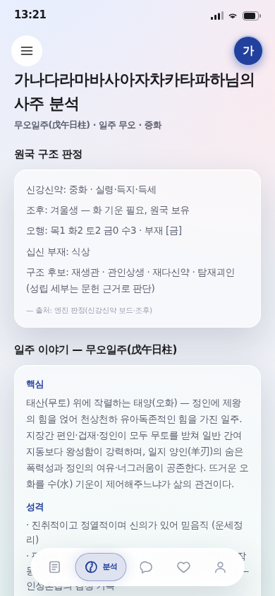
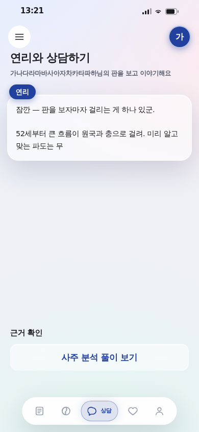
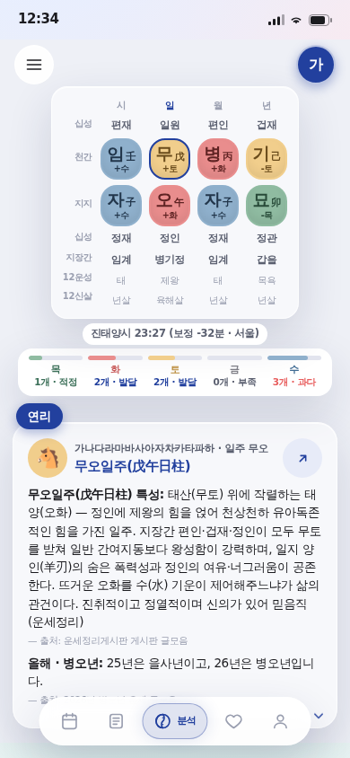
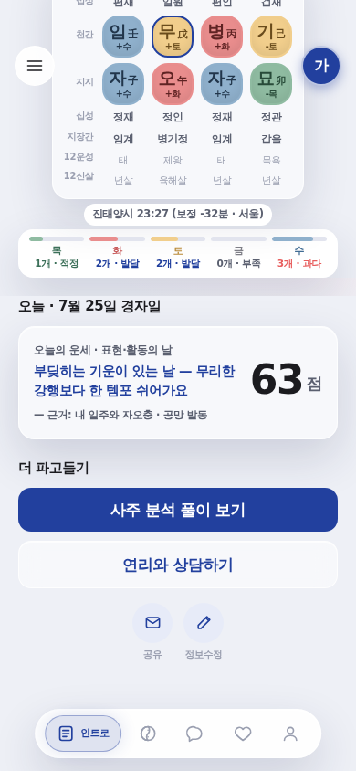
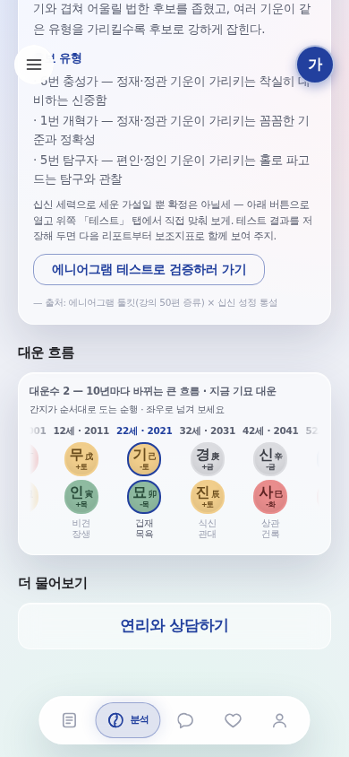

3단계 분리 — 인트로 · 분석 · 상담
2026-07-25 · 지시: "기본 개요, 상담하기 이런거는 아예 분리를 하고 / 맨 인트로에 기본 원국이랑 오늘 사주 봐주는 점수 느낌으로. 그 다음에 구체적으로 사주 분석 풀이, 그 다음에는 미연시"
아래 컷은 전부 실제 렌더(헤드리스 390×844 · ?qa=1 최장명 대표데이터).
1. 무엇이 어떻게 갈렸나



2. ① 인트로 — 기본 원국 + 오늘 점수


여기서 끝내도 되는 화면이다. 확정 태그라인이 「당신의 운명을 위해, 오늘도 한 상」 = 매일 들러 오늘 한 상 받고 나가는 게 핵심 루프라, 원국 + 오늘 점수까지가 기본상이고 더 파고들 사람만 아래 두 버튼으로 내려간다. 오늘 점수는 엔진 일진 관계(합충형파해·공망) 산출이라 근거를 함께 적는다 — "내 일주와 자오충 · 공망 발동".
3. ② 분석 — 구체적 풀이

전엔 이 화면이 요약 2섹션만 보여주는 중복 화면이었고, 실제 풀이는 /result 긴 스크롤 뒷부분에 있었다. 이제 분석 탭이 근거 전 섹션 + 대운 레일을 통째로 받는다. 인트로에서 본 원국이 '무엇을 뜻하는가'가 여기다.
4. ③ 상담 — 미연시 단독
탭 하나가 통째로 대화다. 연출(타이프라이터 · 정곡 단정 → [그… 맞아 / 아니, 딱히?] 분기 → 的中 크리티컬·리커버리)은 기존 정본 그대로 — 이 화면은 그걸 담는 그릇만 만들었다. 대화 영역이 남는 높이를 먹도록 flex로 잡아서, 대화가 진행되며 아래로 자라도 하단이 비지 않는다.
5. 구조 정리 — 코드에서 한 일
| 무엇 | 왜 |
|---|---|
data/useReport.ts 신설 | 세 화면이 같은 원국·리딩·정곡을 쓴다. 데이터 해소 로직(URL 파라미터 → 저장 프로필 → 샘플)이 3중 복제되지 않게 한 곳에만 둔다. stepPath()로 화면을 넘어갈 때 쿼리를 잃지 않는다 |
components/ReportParts.tsx 신설 | 공유 표시 부품(SectionTitle·OhaengStrip·DaeunRail·ReportCard·GlassButton)을 옮겼다. 마크업·값 변경 0 |
Home.tsx·Myday.tsx 삭제 | 인트로가 둘의 역할을 흡수했다. 남겨두면 죽은 화면이 정본을 흐린다. 구 /·/myday 링크는 쿼리·해시를 보존해 인트로로 넘긴다 |
| 스모크 게이트 확장 | npm run verify가 이제 3화면 전부를 실렌더로 확인한다 — 라우트 재편이 화면을 빈 셸로 만들면 커밋 전에 잡힌다 |
6. 게이트
npm run verify 6/6 전부 통과. 6번 스모크는 이번에 확장해 인트로·분석·상담을 각각 실렌더한다. 5화면 활성 탭 일치·JS 에러 0을 별도 실측으로 확인했다.